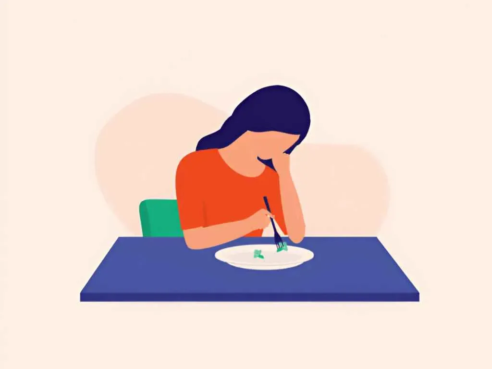

Eating Disorder Psychiatrist For The Treatment Of Eating Disorders In Delhi, Gurgaon, And NCR
Eating disorders are a group of disorders where the patient is preoccupied by food, and body self-image and cannot concentrate on anything else. It is a serious illness and challenging to treat. The main types of eating disorders are anorexia nervosa, bulimia nervosa, and binge-eating disorder; these illnesses are life-threatening if left unattended. They strike females more than males.
The treatment involves psychotherapy, medication, family counseling, and seeing a nutritionist. Dr Gorav Gupta is the best eating disorder psychiatrist in Gurgaon and Delhi NCR.
Anorexia nervosa
In this patient is preoccupied by being thin and has a negative body image. Patient starves herself or himself, at times to the level of being physically ill or being dead.
Few symptoms of anorexia are : –
- Infrequent eating, Preoccupation with food, fearful of gaining weight
- negative self-image
- Exercising excessively
- Depressed, Irritated, Social withdrawal
- Thin appearance
- Trouble sleeping
- Hair become soft, baby like
- Menstrual irregularities
- Constipation
- Abdominal pain

Bulimia nervosa
Bulimia defining features are episodes of bingeing and purging. The individual eats a large amount of food in short time and then vomits or purges it out.
Bulimia signs and symptoms may include:
- Eating until the point of discomfort or pain, often high calorie food
- Self-induced vomiting or laxative use
- Excessive exercise
- Preoccupation with body shape and weight or negative body image
- Low self-esteem
- Abnormal bowel movements, dehydration
- Menstrual irregularities
Binge-eating disorder
This disorder is characterized by excessive eating by a person in spite of being full. But this behavior is not accompanied by exercise, vomiting or purging and after the binging episode person tries to consume more food to overcome the guilt. The person may be normal weight or over weight.
Some key symptoms are
- Eating much more food
- Eating faster during binge episodes
- Frequently eating alone
- Feeling depressed about the binge
Eating Disorder Treatment by the best eating disorder psychiatrist
Generally an eating disorder cannot be tackled by the patient on their own; you need to consult a doctor. Eating disorder takes control of patients life and he or she spends hours only thinking about food and exercising to level of exhaustion.
Before eating orders disrupts patients physical health it is better to take treatment. There have been cases in the past where patients have lost their lives where it has gone untreated due to dehydration, heart problems or starvation.
The treatment involves
- Medication
- Psychotherapy
- Support groups
Dr Gorav Gupta, a leading eating disorder psychiatrist in Delhi, Gurgaon & India has treated many patients suffering from eating disorder. If you know somebody with an eating disorder call to get an appointment at the earliest for best treatment of binge eating disorder in Delhi.